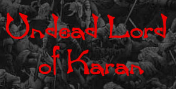
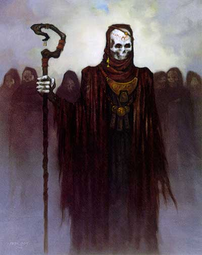

| Climate/Terrain | Any |
| Frequency | Very Rare |
| Organization | Solitary |
| Activity Cycle | Any |
| Diet | None |
| Intelligence | Vary |
| Treasure | Occasional |
| Alignment | Qualsiasi Evil |
| No. Appearing | 1 |
| Armor Class | 3 |
| Movement | 12 |
| Hit Dice | Variabile |
| Thac0 | Variabile |
| No. of Attacks | 1 Tocco |
| Damage / Attacks | 1 - 10 + 2 |
| Special Defenses | Vedi sotto |
| Magic Resistance | Nil |
| Size | Variabile |
| Morale | Fearless (20) |
| XP value | XP del chierico + 2500 |
Gli Undead Lord of Karan sono i chierici di Karan che una volta raggiunto il 9° livello di esperienza e dopo aver seguito il sentiero della non vita periscono e si rianimano come potenti non morti (link). A differenza di molti altri non morti, i chierici si sono sottoposti volontariamente a questa tenebrosa trasformazione quando erano ancora in vita. I chierici che avevano originariamente allineamento Chaotic Neutral mutano il loro secondo allineamento in Evil con tutte le conseguenze che il cambio dell'allineamento può avere sul personaggio.
Combat
Gli Undead Lords of Karan mantengono tutte le conoscenze che avevano in vita e il livello di esperienza che avevano raggiunto potendo continuare ad usare le abilità specifiche della loro classe e potendo continuare a progredire come chierici continuando ad accumulare punti esperienza, dovranno però raggiungere un ammontare di punti esperienza pari al 333% di quelli che dovrebbero normalmente raggiungere per la classe scelta.
Essi ottengono tutte le caratteristiche proprie dei non morti (link).
La classe armatura naturale dell'Undead Lord of Karan scenderà da 10 a 3 alla quale poi si potranno applicare i bonus magici e della destrezza.
L'Undead Lord of Karan può essere scacciato come un non-morto di dadi vita pari a 6 + livello di esperienza + bonus di intelligenza.
Durante ogni round di combattimento oltre al suoi normali attacchi fisici di classe (il pugnale o altro attacco) questo non morto può operare il suo attacco (multiplo contemporaneo) con fattore iniziativa + 3. Si tratta di un tocco gelido che risucchia energia vitale dagli esseri di energia positiva provocando 1 - 10 + 2 danni.
L'Undead Lord of Karan è circondato da un'aura di male e terrore, tutte le creature intelligenti che abbiano 2 o più dadi vita o livelli in meno al non morto e desiderino avvicinarsi a meno di 20 metri da questa creatura, senza il suo permesso, dovranno superare un tiro salvezza contro morte oppure saranno terrorizzati e dovranno mantenersi a distanza. Il tiro salvezza deve essere ripetuto ad ogni incontro con il non morto. Le creature immuni alla paura non sono affette dall'aura.
Habitat/Society
Una volta divenuti Undead Lord of Karan i chierici di Karan per forza di cose sono obbligati a cambiare radicalmente abitudini. In quanto non morti la cui vista provoca il terrore nella gran parte delle persone comune sono tenuti a nascondersi e a isolarsi in luoghi deserti, dove hanno costruito il loro tempio malefico. Di solito si tratta di anctichi luoghi funebri. Devono dunque trovare modi alternativi per mantenere il contatto con i luoghi civilizzati spesso utilizzano fedeli ancora mortali.
Ecology
Essendo creature non morte non hanno alcun rapporto con l'ecologia del primo piano materiale, non si devono mai riposare e non hanno bisogno di nutrirsi o dissetarsi, costituendo invece un morbo per tale ecologia.
